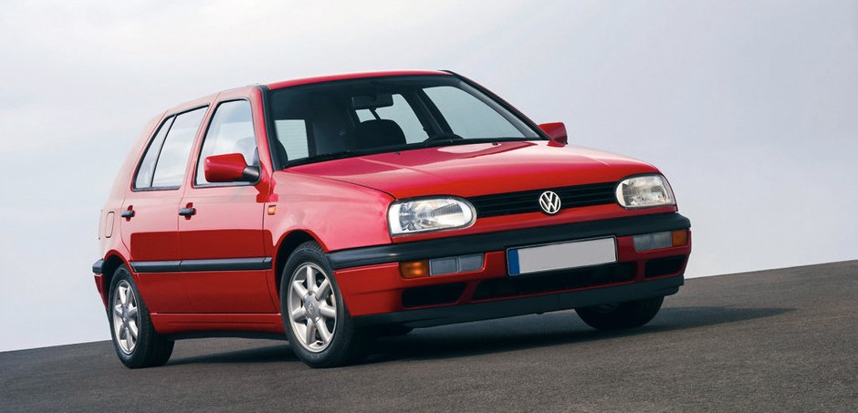
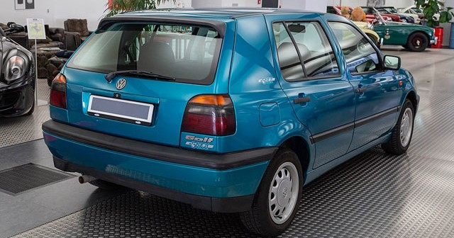
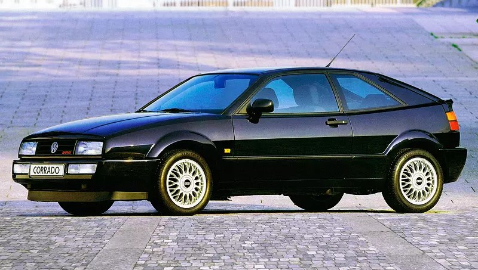
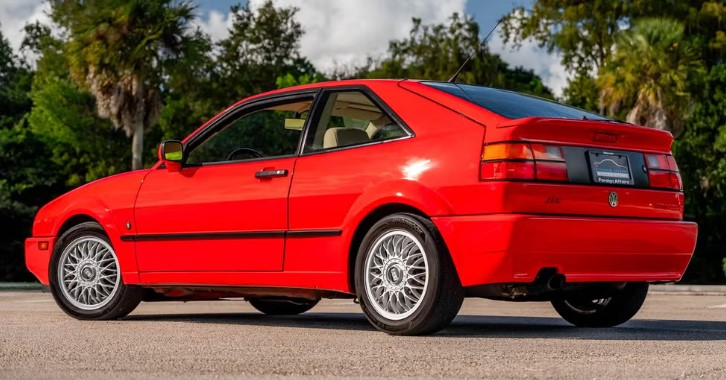

Volkswagen Passat B3 (1988-1993)


Третє покоління Passat надійшло в продаж у Європі в лютому 1988 року (у Північній Америці в 1990 році, а в Південній у 1995 році). Відмінними рисами автомобіля стали блок-фари і відсутність решітки радіатора. Це був перший поперечно-моторний Passat, побудований на власній платфомі Volkswagen, який не має нічого спільного з платформою B3 Audi. Автомобіль, хоча і позначений як B3, був заснований на платформі A, яка використовувалася для моделі Volkswagen Golf. Це покоління Passat мало всього 2 типу кузова: чотирьохдверний седан або п'ятидверний універсал. Модель іменувалася Passat на всіх ринках. У 1989 році випустили повноприводну модифікацію syncro. В даній модифікації, при буксуванні передніх коліс віскомуфта на короткий час підключає привід задніх коліс. Автомобіль цього покоління має стандартний дорожній просвіт і двигун розташований в поперечному положенні. Гамма моторів, що встановлюються на Passat B3, включала в себе як бензинові, так і дизельні силові агрегати, з наддувом і без
Існують модифікації з потужними моторами позначаються спеціальними табличками: 16V двигун з 16-клапанною головкою, об'ємом 1.8 або 2.0 л. G60 двигун об'ємом 1.8 л. з приводним нагнітачем G60 і системою повного приводу Syncro VR6 двигун має 6 циліндрів з VR-образної компонуванням 16V G60 вона ж Limited найпотужніша заводська модифікація (потужність — 211 к.с. крутний момент — 252 Нм) На вибір пропонувалася 5-ступінчаста механічна коробка передач або 4-ступінчаста автоматична КПП.
Volkswagen Golf 3 (1991—2001)
 Гольф третього покоління вперше був представлений в Женевком автосалоні в 1991 році. У той час автомобіль був воістину революційним в області дизайну. Він істотно відрізнявся від усіх своїх попередників - вигнуті лінії, плавні обводи замість незграбних кузовів, також канули в Лету круглі фари. Також автомобіль мав більш просторий салон в порівнянні з салонами попередніх моделей. Продажі нового революційного автомобіля на європейському авторинку стартували восени того ж 1991 року. Якщо порівнювати третій Гольф з другим, то стає зрозуміло, що нове покоління автомобілів отримало набагато більшу кількість модифікацій, і цей факт був обумовлений появою більшої різноманітності у конкуруючих виробників.
У цьому ж поколінні був оновлений і кабріолет, який був побудований ще на основі першого Гольфа. У виробництві ця модифікація протрималася довгі 13 років. Відкриту версію автомобіля випустили в 1999 році, щоб зробити її максимально схоже на що вийшов вже в той час четвертий Гольф. Продавали даний кабріолет під виглядом автомобіля четвертого покоління Golf IV Cabrio. В автомобілі змінили дуже багато - крила, капот, фальшрадиаторную грати, світлотехніку і бампери. За такий дивний вручення цього автомобіля для споживачів автолюбителі прозвали цей автомобіль «продуктом покоління Mk 3,5». Дизайн даних автомобілів став гідним продовженням справи німецьких виробників, оскільки концерн прибрав зайву агресію і грубість у формах авто. Так, автомобіль як і раніше був пізнаваний, але зміни були разючими. Самі ж головні зміни очікували водіїв всередині. Фольксваген не є першим виробником, який застосував підвіску для автомобілів, проте зробив її максимально якісною, при цьому зміг забезпечити прекрасну керованість автомобілем на новій платформі. Також на автомобілях третього покоління Гольф з'явився повний привід. Наявність уніфікованого електричного підсилювача з мотором, який знаходиться на самій рейці, дозволило зробити простір для двигуна більш просторим, а також сама система стала набагато зручніше і простіше.
Оснащення автомобілів третього покоління стало відповідати стандарту даного класу - електроприводи сидіння, подвійний клімат-контроль. Система безпеки теж виявилася налагодженої на найвищому рівні. У базі є шість подушок безпеки, також в оснащення автомобілів були включені захисні шторки для голови, на випадок бічного удару. У деяких комплектаціях є і бічні подушки для пасажирів ззаду. Салон став також більш просторим в порівнянні з автомобілями попереднього другого покоління. Простору на сидіннях можуть позаздрити деякі сучасні автомобілі, які були випущені набагато пізніше третє Гольфів. Третє покоління стало свого роду проривом і по частині механіки - саме ці автомобілі стали першими, на яких застосовувалися силові агрегати FSI з системою безпосереднього вприскування. Повний привід з муфтою від «Haldex» призначався для більш потужних версій. Для російських водіїв від концерну була припасена модифікація з 8-клапанним двигуном об'ємом 1.6 л. укупі з просто п'ятиступінчастою КПП.
Volkswagen Corrado (1989-1996)
 Volkswagen Corrado представляє собою 3-дверний 4-місний спорткар з кузовом купе, який випускався протягом 1989-1996 років. Чи варто говорити, що автомобілі німецького автомобільного концерну завжди виділялися надійністю, економічністю і, головне, безпекою. Коррадо відзначився тим, що став першим спортивним маскл каром, оскільки до випуску цієї моделі компанія Volkswagen не спеціалізувалася на виробництві спортивних автомобілів, як таких. Попередниками Коррадо стали «пробні» спорткари типу Scirocco і SciroccoII, а платформою послужив Golf Mk 2. Фольксваген Коррадо став чимось на зразок «народного» спортивного автомобіля. Основним конкурентом Corrado є Toyota Celica Coupe.
Автомобіль відрізняється впевненою їздою і відмінною стійкістю на високій швидкості. Завдяки чутливому рульовому керуванню і гідропідсилювачу керма, водій добре відчуває дорогу. Клиноподібна форма кузова передбачає швидкісну їзду, так само, як і автоматичне антикрило, яке піднімається на швидкості, що перевищує 130 км/год. Підвіска Коррадо представляє собою поперечний важіль спереду і підвіску з тягою, що з'єднує важелі ззаду. Інженери-конструктори приділили чимало уваги безпеці купе, оснастивши його дверними балками безпеки та антиблокувальною системою гальм. Спереду автомобіль оснащується вентильованими дисками, а ззаду дисковими гальмами.
Салон купе розрахований на 4 чоловік, а сидіння розташовуються за схемою 2+2. Крісло водія і переднього пасажира забезпечує достатньо місця для голови, плечового пояса і ніг, а ось заднє сидіння вважається трохи тісним. Панель управління, як і варто було очікувати, обшита твердим, але приємним на дотик пластиком, і розміщує на собі класичні циферблати. Центральна консоль досить проста і компактна. Тканинна обшивка сидінь виглядає трохи непоказною і швидко затирається, а ось шкіряна оббивка вважається більш комфортною і довговічною. Водійське крісло розміщено таким чином, що сліпі зони практично відсутні. Багажний відсік спорткара здатний розмістити 235 літрів багажу.
Протягом 1989-1996 років, автомобіль оснащувався чотирма видами двигунів. Перший являє собою 1,8-літровий 4-циліндровий бензиновий мотор. Максимальна швидкість автомобіля з таким двигуном дорівнює 225 км/год, а час розгону від 0 до 100 км/год дорівнює 8,3 с. Наступний силовий агрегат являє собою бензиновий 2,0-літровий 4-циліндровий з максимальною швидкістю 200 км/год і часом розгону до 100 км/год за 10,6 секунд. Третій варіант двигуна являє собою вдосконалений 2,0-літровий 4-циліндровий, з максимальною швидкістю їзди автомобіля 210 км/год, при цьому час розгону від 0 до 100 км/год зменшився до 9,3 с. І останній, найбільш сильний мотор - це 2,9-літровий 6-циліндровий. Оснащена таким силовим агрегатом машина здатна досягати 235 км/год, а час розгону від 0 до 100 км/год займає всього 6,9 секунд.
Всі автомобілі Коррадо, незалежно від року випуску, оснащувалися переднім приводом, а двигуни працювали в парі з 5-ступінчастою автоматичною коробкою передач, варто згадати, що в якості опції доступна 4-швидкісна автоматична коробка передач.